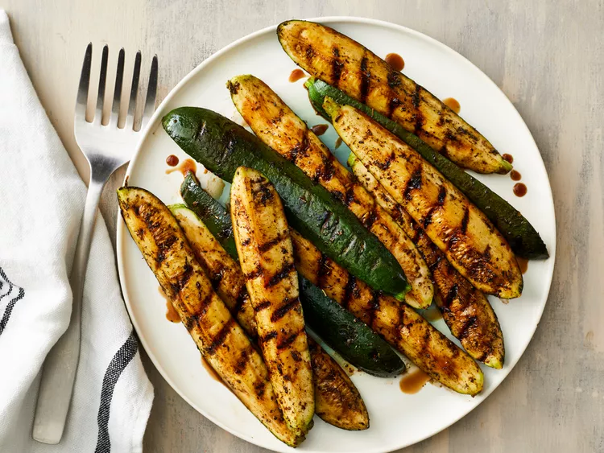

Home
Grilled Zucchini

Credit: Dotdash Meredith Food Studios
Description
Grilled zucchini makes the perfect summer side dish. This recipe is easy to prep with sliced zucchini and simple pantry ingredients.
Ingredients
- 2 zucchinis, quartered lengthwise
- 2 teaspoons olive oil
- 1 teaspoon Italian seasoning
- 1/2 teaspoon garlic powder cheese
- 1 pinch salt
- 2 tablespoons balsamic vinegar
Steps
- Gather all ingredients.
- Preheat an outdoor grill for medium-low heat and lightly oil the grate.
- Brush zucchini with olive oil. Sprinkle Italian seasoning, garlic powder, and salt over zucchini.
- Cook on the preheated grill until charred and beginning to turn golden brown, 3 to 4 minutes per side. Brush balsamic vinegar over zucchini and continue cooking 1 minute more.
- Serve immediately.